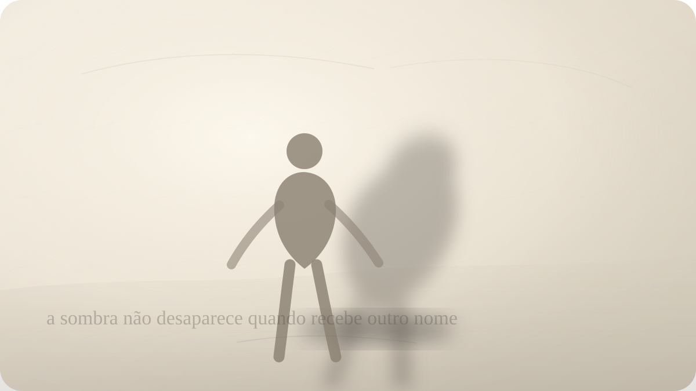

Autoconhecimento
Aquilo que você condena também mora em você?
Carl Jung e o encontro desconfortável com a sombra.

Existe uma irritação que chega rápido demais. Alguém fala de um jeito, posta uma imagem, exibe uma segurança, comete uma fraqueza, mostra uma vaidade, e algo em você se contrai antes mesmo de haver pensamento claro. Não é apenas discordância. É uma reação íntima, desproporcional, quase física. Como se aquela pessoa tivesse tocado uma porta interna que você preferia manter fechada.
Às vezes a reação parece moralmente impecável. Você diz que o outro é falso, arrogante, carente, preguiçoso, covarde, exibido, frio, melodramático. Talvez seja verdade. Pessoas realmente podem ser falsas, arrogantes, carentes, preguiçosas, covardes, exibidas, frias e melodramáticas. A pergunta incômoda não é se o outro possui defeitos. A pergunta é por que exatamente aquele defeito captura tanta energia em você.
É nesse ponto que Carl Gustav Jung se torna perigoso para a vaidade. Sua ideia de sombra não serve para produzir uma estética sombria, nem para romantizar impulsos destrutivos. Ela aponta para aquilo que a consciência não quer reconhecer como seu: desejos, medos, agressividades, vergonhas, invejas, fragilidades e também forças vitais que foram reprimidas porque pareciam inadequadas à imagem que a pessoa precisava sustentar.
A sombra não é simplesmente o mal dentro de nós. Essa leitura é pobre demais. Ela é o conjunto do que foi empurrado para fora da identidade consciente. Pode conter crueldade, sim. Pode conter inveja, manipulação, ressentimento, desejo de domínio, prazer em ferir. Mas também pode conter coragem, sensualidade, ambição, espontaneidade, alegria, firmeza e uma capacidade de dizer não que a pessoa aprendeu a chamar de egoísmo.
Jung percebeu que ninguém se torna inteiro apenas cultivando uma imagem luminosa de si. A pessoa pode ser educada, espiritualizada, racional, generosa, gentil e, ainda assim, carregar zonas psíquicas que atuam sem serem vistas. Quanto mais perfeita a persona tenta parecer, mais caro pode ser aquilo que ela exclui.
Persona, para Jung, não é falsidade pura. É a máscara social necessária para viver com os outros. Todos precisamos de alguma forma de apresentação: a maneira de falar no trabalho, o tom diante da família, a postura em público, o papel que permite convivência. O problema começa quando a pessoa confunde a máscara com a totalidade de si. Ela passa a acreditar que é apenas aquilo que consegue aprovar.
A sombra cresce nesse intervalo entre o que somos e o que aceitamos ser. Uma pessoa que só admite bondade pode não perceber sua agressividade até que ela escape em sarcasmo, controle ou punição moral. Uma pessoa que só admite força pode não reconhecer medo, carência e necessidade de amparo. Uma pessoa que só admite humildade pode esconder uma ambição que retorna como inveja dos que ousam aparecer.
Por isso a sombra aparece tantas vezes através da projeção. O que não reconheço em mim pode ser visto com nitidez exagerada no outro. A pessoa não apenas observa um traço alheio; ela o persegue com uma intensidade que denuncia envolvimento. O outro vira tela. Nele coloco aquilo que não suporta entrar na minha própria narrativa.
Isso não significa que toda crítica seja projeção. Essa banalização seria perigosa. Há injustiças reais, abusos reais, manipulações reais, violências reais. Dizer a alguém que tudo o que denuncia é apenas sua sombra pode virar uma forma refinada de silenciamento. Jung não nos autoriza a dissolver o mundo externo dentro da psicologia individual.
A pergunta madura é mais precisa: além do que existe no outro, o que a minha reação revela sobre mim?
Se a vaidade do outro me irrita de modo desmedido, talvez eu esteja vendo uma vaidade que também temo possuir. Ou talvez eu tenha aprendido que desejar reconhecimento é vergonhoso, e por isso odeio em alguém a liberdade de buscar aplauso. Se a fraqueza alheia me enfurece, talvez exista em mim uma parte frágil que foi tratada com dureza. Se a coragem do outro parece arrogância, talvez eu tenha enterrado minha própria vontade de ocupar espaço.
A sombra não pede confissão teatral. Pede honestidade sem espetáculo. Não se trata de sair dizendo “também sou tudo isso” como se a autodepreciação fosse sabedoria. Trata-se de suportar uma investigação difícil: quais aspectos de mim precisam aparecer disfarçados porque não encontram lugar consciente na minha vida?
Essa investigação costuma vir acompanhada de culpa. Quando alguém percebe em si inveja, ressentimento, desejo de ferir, prazer em vencer, medo de ser pequeno ou vontade de abandonar responsabilidades, pode surgir uma reação imediata de condenação. A pessoa tenta voltar depressa à antiga imagem moral. Quer provar que não é assim. Quer eliminar o traço antes de compreendê-lo.
Mas aquilo que é apenas condenado raramente é integrado. Pode ser reprimido, negado, polido, escondido. Ainda assim continua agindo. A sombra não integrada encontra caminhos indiretos: ironias, esquecimentos convenientes, escolhas repetidas, paixões súbitas, alianças estranhas, explosões desproporcionais, julgamentos rígidos. O que não entra pela porta da consciência costuma entrar pela janela do comportamento.
Integrar a sombra não significa obedecer a ela. Esse ponto é decisivo. Reconhecer agressividade não autoriza agressão. Reconhecer desejo não obriga a satisfazê-lo. Reconhecer inveja não justifica destruir quem possui o que nos falta. A integração não é licença moral; é responsabilidade maior. Só posso escolher eticamente diante daquilo que reconheço. O que nego continua escolhendo por mim.
Há uma diferença enorme entre dizer “não sinto raiva” e dizer “sinto raiva, e preciso decidir o que fazer com ela”. A primeira frase preserva uma imagem. A segunda inaugura uma ética. A consciência não torna automaticamente uma pessoa melhor, mas aumenta sua responsabilidade sobre o que ela faz com o que vê.
Nesse sentido, Jung não oferece um caminho confortável de autoconhecimento. Ele desloca o centro da pergunta. Não basta saber quais são seus valores declarados. É preciso observar onde você trai esses valores quando está com medo, cansado, humilhado, desejando aprovação ou tentando não perder controle. A verdade psicológica aparece menos nos discursos sobre quem somos e mais nos pontos em que reagimos sem liberdade.
A sombra também toca a solidão. Muitas pessoas se sentem sozinhas não apenas porque faltam vínculos, mas porque partes inteiras de si não têm permissão para existir nem mesmo internamente. Elas se acompanham com vigilância. Sentem uma emoção e já a corrigem. Têm um desejo e já o ridicularizam. Percebem uma raiva e já a escondem sob educação. Com o tempo, a vida interior fica parecida com uma casa onde alguns cômodos foram trancados.
Abrir esses cômodos não é agradável. Pode haver poeira, objetos antigos, coisas que assustam, memórias, impulsos, vergonha. Mas também pode haver energia presa. Às vezes a pessoa chama de paz o que é apenas anestesia. Chama de bondade o que é medo de conflito. Chama de desapego o que é incapacidade de desejar. Chama de maturidade o que é cansaço de tentar viver.
Jung insistia que o caminho de individuação não busca perfeição, mas inteireza. Essa distinção é central. Perfeição quer eliminar contradições para preservar uma forma ideal. Inteireza quer reconhecer opostos, tensões e fragmentos para que a pessoa deixe de ser governada por aquilo que exclui. O objetivo não é virar alguém impecável. É tornar-se menos inconsciente do próprio funcionamento.
Isso torna o autoconhecimento menos narcísico do que parece. Olhar para a sombra não é ficar fascinado por si. É reduzir a necessidade de transformar os outros em depósito do que não suportamos. Quanto menos uma pessoa conhece suas próprias zonas rejeitadas, mais facilmente as encontra no mundo como inimigos absolutos.
Há um ganho ético nisso. Quem reconhece a própria capacidade de inveja tende a tratar a inveja alheia com menos ingenuidade e menos crueldade. Quem reconhece a própria agressividade não precisa fingir pureza para estabelecer limites. Quem reconhece sua vaidade pode buscar reconhecimento sem transformar isso em teatro de superioridade. A sombra vista não desaparece, mas perde parte do seu poder de atuar mascarada.
Na vida cotidiana, esse trabalho começa pequeno. Observe uma reação exagerada. Uma crítica que você repete. Um tipo de pessoa que o irrita sempre. Um elogio que você não consegue dar. Uma qualidade alheia que você transforma imediatamente em defeito. Um desejo que você só admite na forma de piada. Um medo que você disfarça como desprezo.
Depois, faça a pergunta sem pressa: o que exatamente isso toca em mim?
A resposta não precisa ser bonita. Talvez apareça vergonha. Talvez apareça uma ferida antiga. Talvez apareça uma ambição negada. Talvez apareça uma parte infantil, competitiva, carente, orgulhosa, assustada. O ponto não é convidá-la a governar a casa. O ponto é parar de fingir que ela não vive ali.
A sombra é desconfortável porque arranha a autobiografia que contamos sobre nós mesmos. Ela mostra que o inimigo interno nem sempre tem aparência monstruosa; às vezes ele aparece como virtude rígida, opinião repetida, moralidade defensiva, desprezo elegante. E também mostra que algumas forças que chamamos de perigosas podem ser formas de vida pedindo integração.
Talvez a pergunta de Jung permaneça justamente aí, sem consolo fácil: se aquilo que você mais condena no outro também revelasse uma parte esquecida de você, que verdade começaria a pedir passagem?
Pergunta final
Se aquilo que você mais condena no outro também revelasse uma parte esquecida de você, que verdade começaria a pedir passagem?
Fontes e leituras
- JUNG, Carl Gustav. Aion: Researches into the Phenomenology of the Self. Collected Works, volume 9ii.
- JUNG, Carl Gustav. Two Essays on Analytical Psychology. Collected Works, volume 7.
- JUNG, Carl Gustav. The Archetypes and the Collective Unconscious. Collected Works, volume 9i.
- International Association for Analytical Psychology. The Shadow.
- The Society of Analytical Psychology. The Shadow, por Christopher Perry.
- Pacifica Graduate Institute Library Guide. A Library Guide to Jung's Collected Works: Shadow.
Leituras relacionadas
E você, o que está sentindo agora?
Escolha seu momento e encontre uma reflexão filosófica para atravessá-lo com mais clareza.
Encontrar uma reflexão